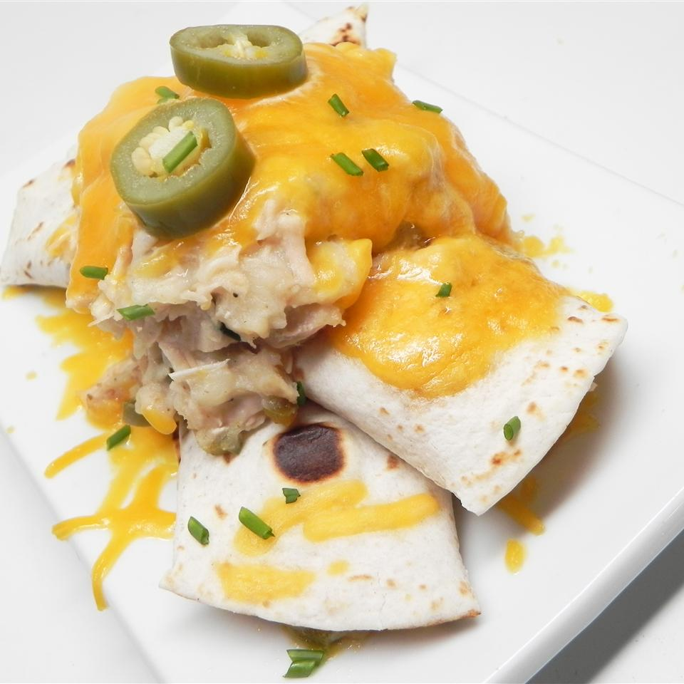

Turkey Burrito

Description
A tasty and fresh addition to your Thanksgiving. This recipe calls for instant flour, formulated to dissolve
easily in liquids, and primarily used as a thickener in gravy recipes. Chicken broth can be used in place of
turkey broth.
Ingredients
- 3 cups cooked turkey, cut into bite-size pieces
- 1 cup prepared stuffing
- 1 cup mashed potatoes
- 1 cup leftover gravy
- 2 quarts turkey broth
- 1 large onion, chopped
- ¼ cup self-rising flour
- 10 (10 inch) flour tortillas
- 1 (8 ounce) package shredded Cheddar cheese
- 3 pickled jalapeno peppers, sliced
- 3 tablespoons pickled jalapeno pepper juice
- salt and pepper to taste
- 1 tablespoon dried parsley
Steps
- In a large pot, combine turkey, stuffing, mashed potatoes, gravy, broth, and onion. Bring to a boil, and cook until onion is soft. Thicken with flour if needed.
- Warm tortillas in a dry frying pan over medium heat. Spoon turkey mixture onto a warm tortilla, sprinkle with cheese, and roll into a burrito. Repeat with remaining ingredients.
- Spread more cheese on top and add another spoonful of the turkey mixture over the cheese. Garnish with jalapeno slices, sprinkle with jalapeno juice, and season with salt, pepper, and parsley. Serve hot.